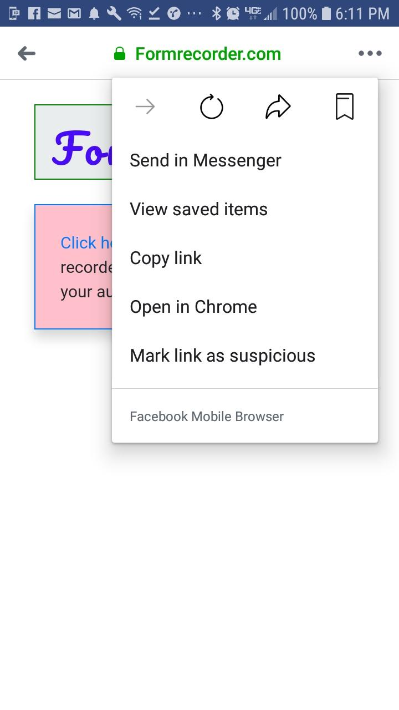

FREQUENTLY ASKED QUESTIONS
Question : Do you have a Video Tutorial - that explains all about Formrecorder.
Yes, we do have a video tutorial. Click here
to access the tutorial.
Question : How is Formrecorder useful?
Formrecorder Customized Google Audio Form would save a considerable time for music teachers in tracking their Students music assignments. It is also a very convenient way for students to record and submit their assignment as they are doing it in one screen.
Question : Is there any cost for using Formrecorder?
Formrecorder.com products are completely FREE.
Question : How does the customized Google audio form work?
- The Form has two parts : (a) Simple Audio recorder and (b) JavaScript Form.
- Once the User records the audio using the Simple Audio recorder and hits share button,
then a shareable audio link is created and populated in the Form.
- The Student can fill the rest of the form and hit SUBMIT button.
- The form has a Google Sheet Web API. Thus once the Data is submitted, it is fed to the
Google sheet that is linked to the Google Sheet Web API? This Google sheet will be residing in teacher's Google Drive.
- A teacher can access all their students recordings via one Google sheet.
Please check the demo form and feel free to record a test audio, then complete the Form details and submit it .
The demo Google sheet link will appear at the bottom of the form and you can click on that and view your recording details.
We also have a Demo Audio Quiz form, wherein the teacher can record the question and make it part of the form.
The student can respond to the question via a audio recording.Check the demo form - Audio Quiz version
Question : How do I create a new Google Customized Audio Form?
Click here for the Formbuilder.Once you input your Form
details, it will generate a Form for you. If you want to generate a Form that has an embedded audio question,
then click here
Question : Can I create multiple Forms
Yes, you can create multiple forms.Currently there is no limitation on the number of forms that a user can create.
Question : How do I get a Google Sheet Web API link? Do I have to write any code for it?
Click here for step by step guide
to generate Google Sheet Web API link. No, you dont have to write any code for generating the web API link.
Everything is given in the Guide and you just have to follow the instructions.
Question : Is the data of my students safe?
The data of your students is totally safe, because it will be residing in your Google drive.
Question : Do the students have to learn anything new to use this form?
Formrecorder customized Google Form is very intuitive. The students donot need any
special training to use the form. There is a small Users Guide
that they can refer when they are new to Formrecorder.
Question : Do the students have to signup to use the Formrecorder?
No, the students donot have to signup to use Formrecorder. They dont have to reveal any personal information
to use the Formrecorder.
Question : Can I use Formrecorder to just quickly record an audio and share it with others?
Yes, you can use Simplerecorder to quickly record an audio and share
it with others.
PLEASE NOTE : Currently this app does not work in Facebook browser. In case you have opened this via Facebook then you can tap on the three dots at the top right section and a popup window will open up where in you can choose to open it in Chrome. For iphone users, you can open in safari.
Following is the snapshot as to how one can open the link in Chrome from facebook browser.
If you have questions then please Contact us
